- Launching into Computer Science
- Object-oriented Programming
- Secure Software Development
- Research Methods and Professional Practice
Welcome to Research Methods and Professional Practice.
Here you will find artefacts and reflections related to the Research Methods and Professional Practice module.
Unit 1
In this unit, we were introduced to the concepts of ethics and reasoning. To develop our ability to approach the idea of Artifical Intelligence (AI) from an ethical and governance perspective, we were assigned a task to review existing measures designed to govern the development of AI and propose a solution to their current shortcomings. My response is shown below.
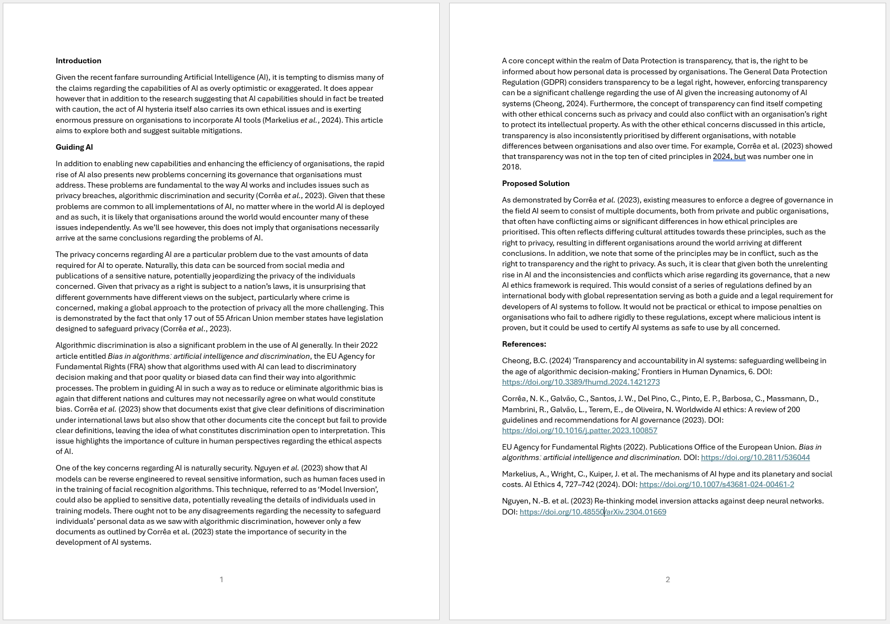We were also asked to discuss a case study involving a fictitious company in terms of the company's failure to comply with ethical standards. My forum post is shown below.
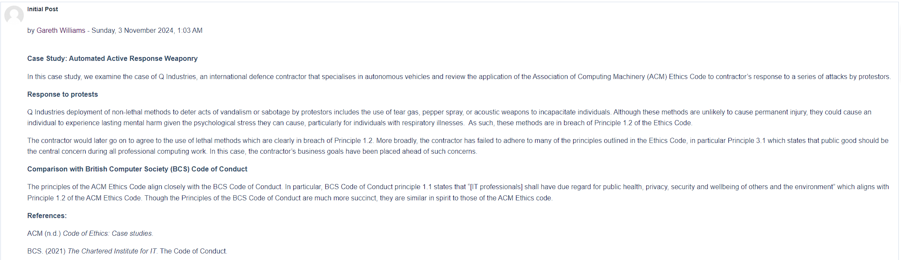Unit 2
This unit was concerned with the ideas behind conducting a literature review within a chosen topic, giving us the opportunity to conduct our own.
Continuing with our discussion from Unit 1, we were asked to respond to three of our peers' forum posts which I've included below.
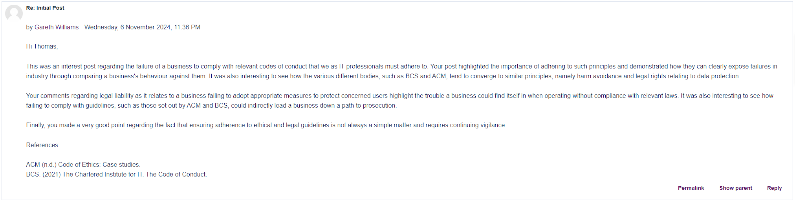 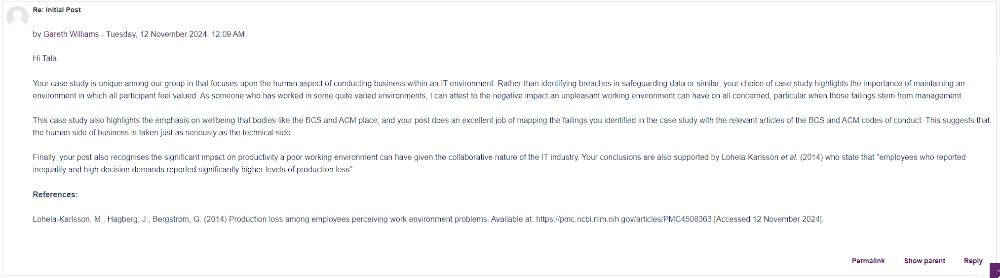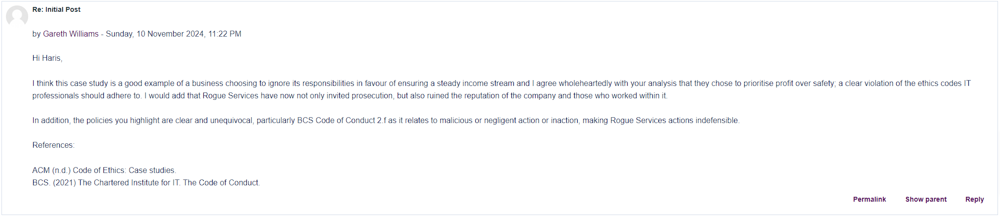
Unit 3
In this unit, we were introduced to the various types of research methods used in conducting research projects. We were asked to consider which methods would be most appropriate for our individual research projects and I've included my thoughts below.
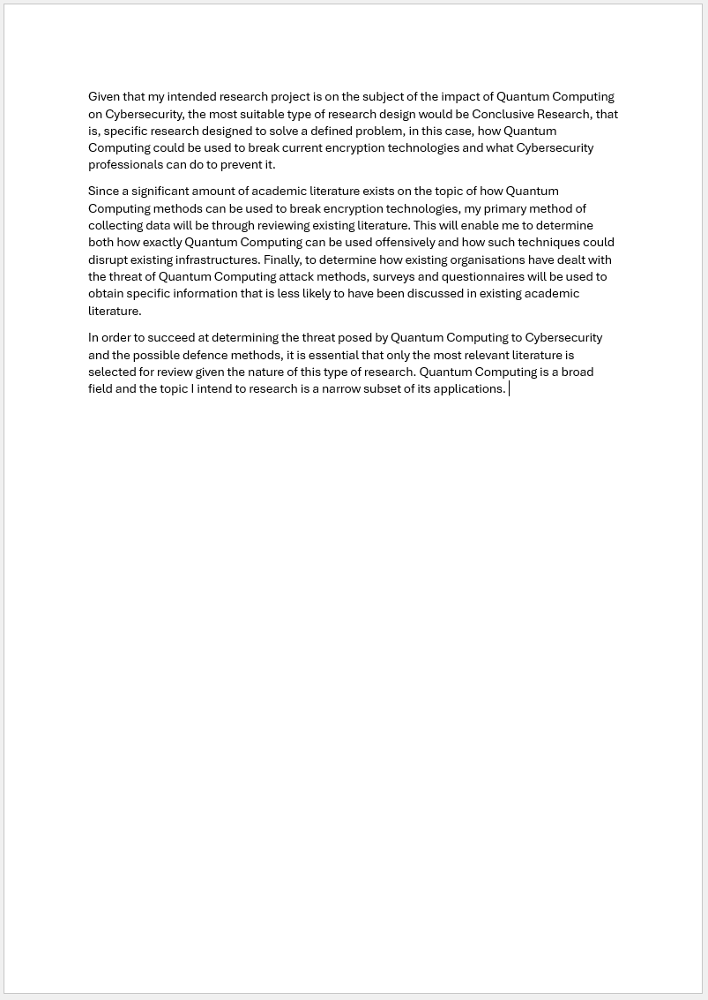Unit 4
This unit focused on the different data collection methods, allowing us to taylor our research projects more effectively. In addition, we were asked to submit our Literature Review proposals. I've included mine below.
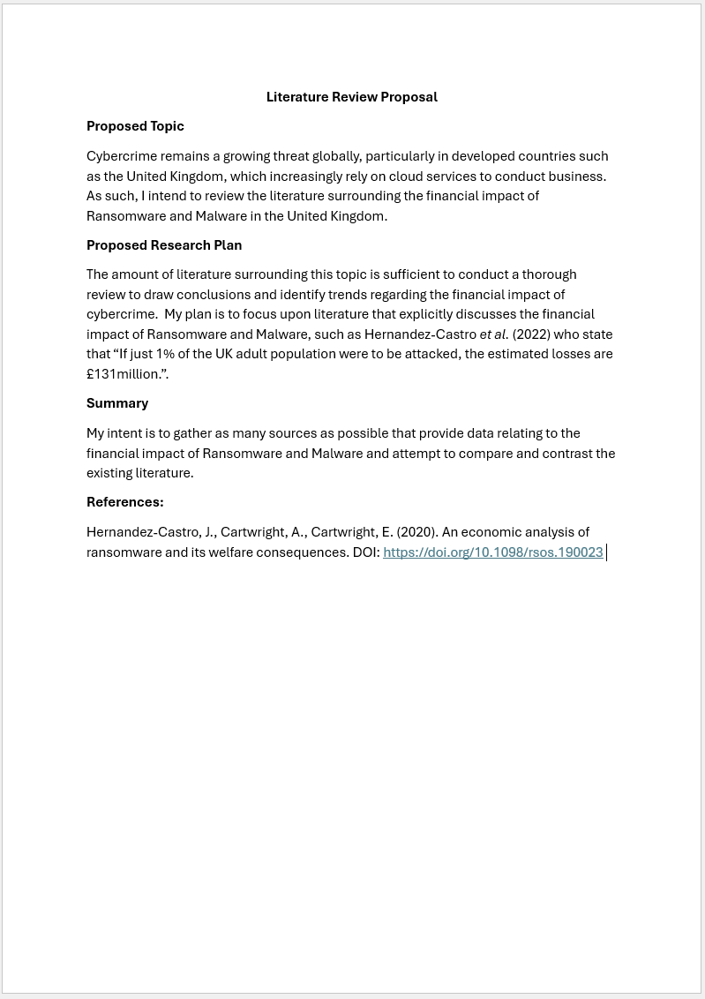Unit 5
In this unit, we looked at survey methods and the differences between types of questions, such as open or closed questions. We looked at a high-profile example in which online surveys were misused with the purpose of manipulating users and were asked to share our thoughts on the matter. I've include mine below.
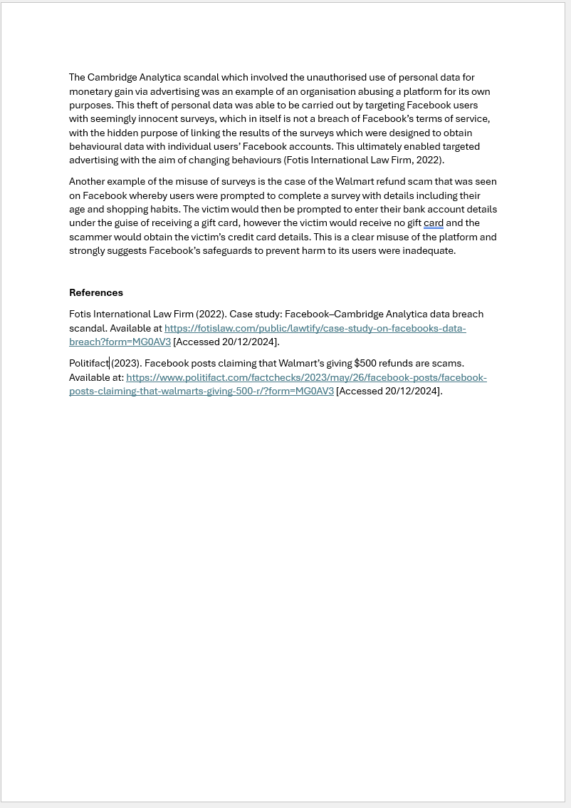Unit 6
This unit introduced the idea of quantitative methods in data analysis, and explored questionnaire design.
Unit 7
In this unit, we explored the ideas of inference and hypothesis testing. We were assigned a task of completing datasheets which involved the use of the Data Analysis functionality within Microsoft Excel, as shown below.
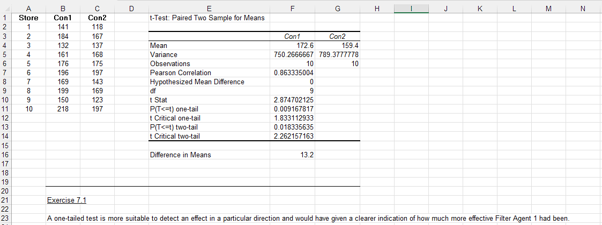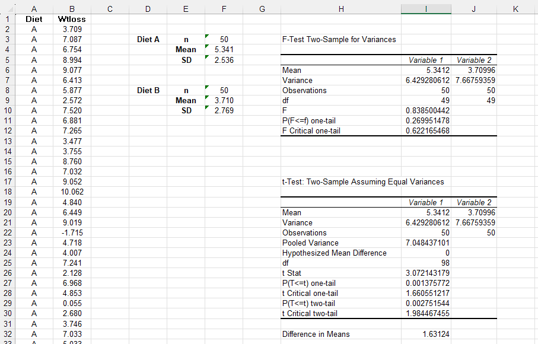
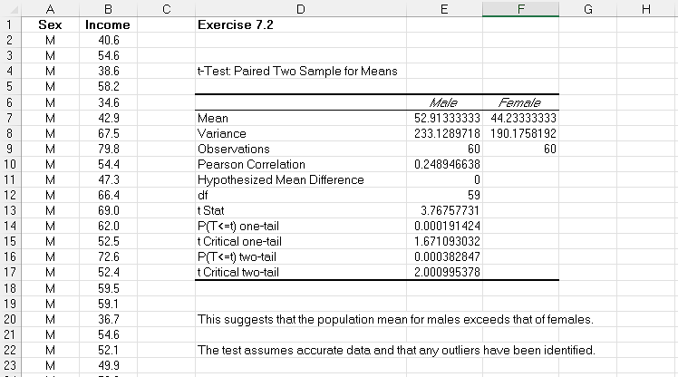
Unit 8
This unit was concerned with data analysis and visualisation and explores the difference between quantitative and qualitative data analysis. We were assigned the task of submitting a proposal for a research project in which I chose the topic of the impact of Quantum Computing on Cybersecurity. My proposal is shown below.
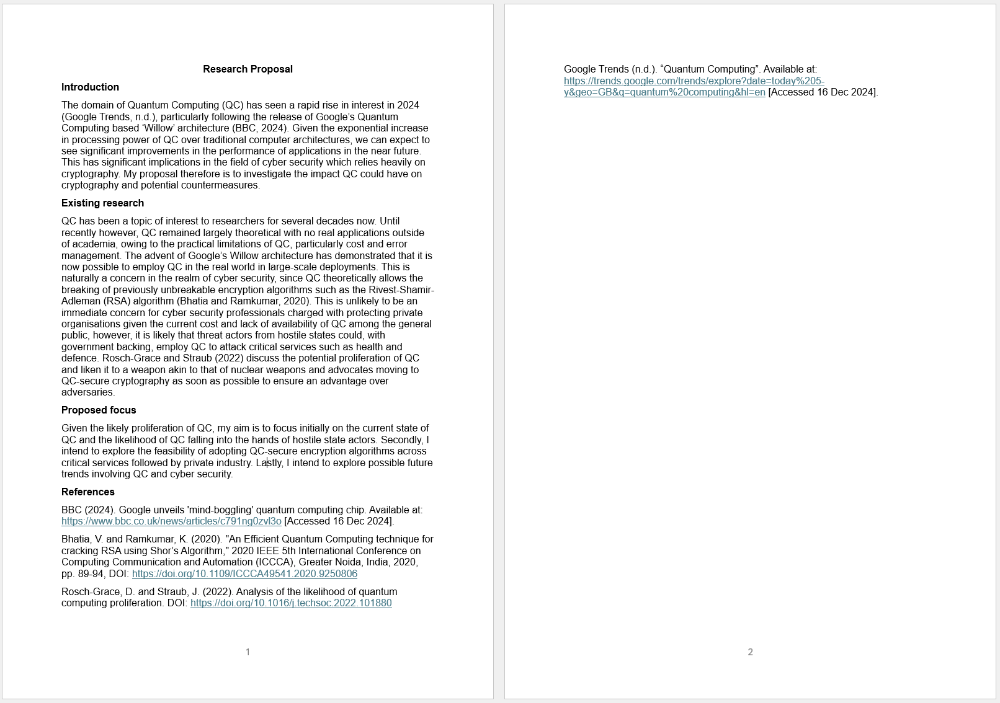